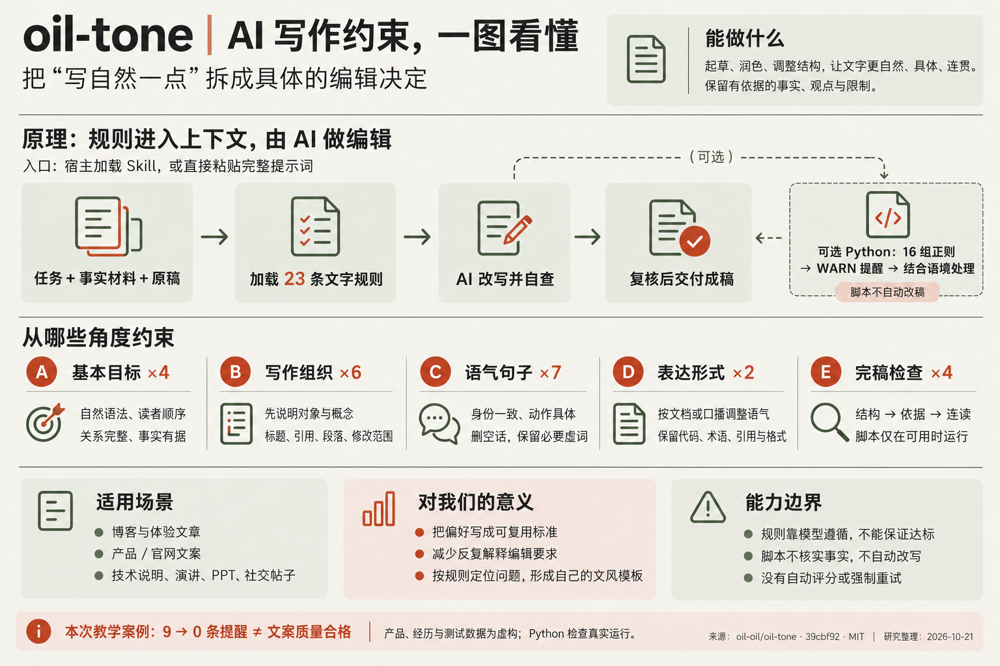

OPEN SOURCE STUDY / 写作 Skill
把「写自然一点」
拆成具体的编辑决定。
oil-tone 用 23 条文字规则引导 AI 起草、润色和调整结构，保留事实、补清关系、减少空话。规则与材料一起进入上下文，由模型执行；我们可以将它复用为文章、产品文案和口播的编辑标准。
这款革命性工具
赋能团队工作，
支持批量导出。
把材料中的限制写清楚。A4 + C6
这款工具支持批量导出，
每次最多处理 20 个文件。
逐条对照原文
追溯修改依据
不等于质量评分
约束如何被写下，
又如何落实到一份稿子。
01 / 我们的理解
它把编辑经验，
变成可重复使用的要求。

你提供任务、事实材料和草稿；AI 依据这份规范完成写作，再用检查清单复核。附带的 Python 脚本只负责提示少数可疑表达。
具体到每一次取舍
哪些信息必须保留，何时解释术语，怎样补清关系，哪些评价没有依据。
多数约束靠模型遵循
它没有训练新模型，也没有独立的改写服务。实际编辑由读取规范的 AI 完成。
检查范围有边界
正则匹配不核实事实，不保证自然，也不会因为提醒而阻止交付。
文章与个人体验保留真实观察，减少无依据的升华。
产品与网站介绍说清功能、操作和使用限制。
演讲、口播与 PPT调整阅读顺序与拗口表达。
把一句文风要求，沉淀成自己的编辑标准。
固定判断条件、修改动作和复核清单，让每次改稿都有依据。先复制下面的完整提示词，再根据自己的读者、场景和真实案例调整；需要解释改动时，可要求 AI 逐处标出规则与理由。
复制完整提示词 ↓02 / 实际实现
从入口，到最终成稿。
点击每一步，分清谁在执行。
这是规范要求的流程，程序只覆盖其中一部分。
展开：仓库里实际有哪些文件？
SKILL.md写作规则与复核清单名称和描述用于识别；正文交给模型理解和遵循。
agents/openai.yaml调用入口的界面配置显示名称、颜色和默认调用语句，不执行改写。
scripts/tone_lint.py16 组正则检查输出可疑行和建议，不替换原句，不调用模型。
03 / 阅读规则
目标 → 判断 → 动作 → 边界
每条都能展开查看原文、修改示例和适用条件。
A—E 是我们的对照编号，上游文件没有这些编号。
没有匹配的规则。试试“因果”“引用”或“自然”。
这里的改写示例由我们构造，补充细节需已有材料支持；它们用于解释规则，不是上游评测结果。
直接使用：复制下面的完整提示词 ↓直接使用 / 完整提示词
把这 23 条规则，
直接交给你的 AI。
无需安装 Skill。复制后填写任务信息，
附上事实材料与原稿，再发送给 AI。
本研究基于固定版本 SKILL.md 整理，补充了任务输入和交付要求；A—E 对应上方规则。末尾保留来源与 MIT 许可，不属于最终成稿内容。
04 / 改稿实验
一篇完整稿子，
逐处看它为什么变了。
点击橙色标记，查看前后变化、规则与事实依据。
也可以直接阅读原稿或无批注成稿。
虚构材料，真实执行检查。资料盒、经历与数据均为教学设定。改写由本次助手按规则完成；这里只展示已保存的案例，没有在线 AI 接口。
先固定事实底稿8 条已确认材料
05 / 验证与源码
哪些真的检查了，
哪些仍要判断。
下面是固定版本脚本对本例文本的真实输出。
9 → 0 表示提醒数量变化，不是质量提高的分数。
0 条提醒之后，还需看这些。
试用两天，不能写“长期使用”。检查器不核对材料中的经历。
耗时降低 65%，不等于效率提升 65%。检查器不理解计算指标。
文字导出，不能写“完整备份”。检查器不判断功能范围。
这些问题由我们对照底稿修正。整体文案质量没有进行独立模型评审或读者盲测。